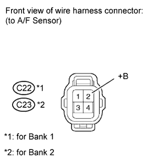
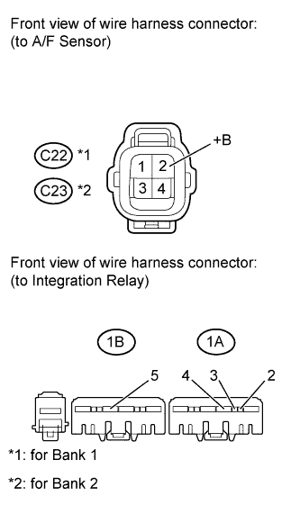
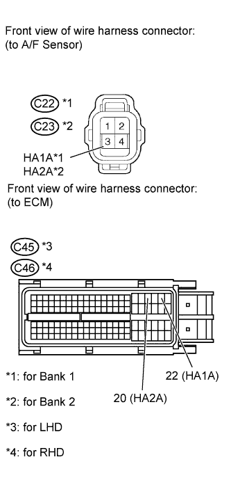

DTC P0031 Oxygen (A/F) Sensor Heater Control Circuit Low (Bank 1 Sensor 1) |
DTC P0032 Oxygen (A/F) Sensor Heater Control Circuit High (Bank 1 Sensor 1) |
DTC P0051 Oxygen (A/F) Sensor Heater Control Circuit Low (Bank 2 Sensor 1) |
DTC P0052 Oxygen (A/F) Sensor Heater Control Circuit High (Bank 2 Sensor 1) |

| DTC Code | DTC Detection Condition | Trouble Area |
| P0031 P0051 | The Air-Fuel Ratio (A/F) sensor heater current is below 0.8 A (1 trip detection logic). |
|
| P0032 P0052 | An Air-Fuel Ratio (A/F) sensor heater current failure (1 trip detection logic). |
|
| 1.INSPECT AIR FUEL RATIO SENSOR (HEATER RESISTANCE) |
 |
Disconnect the Air-Fuel Ratio (A/F) sensor connector.
Measure the resistance according to the value(s) in the table below.
| Tester Connection | Condition | Specified Condition |
| 1 (HA1A) - 2 (+B) | 20°C (68°F) | 1.8 to 3.4 Ω |
| 1 (HA1A) - 4 (A1A-) | Always | 10 kΩ or higher |
| 1 (HA2A) - 2 (+B) | 20°C (68°F) | 1.8 to 3.4 Ω |
| 1 (HA2A) - 4 (A2A-) | Always | 10 kΩ or higher |
|
| ||||
| OK | |
| 2.CHECK TERMINAL VOLTAGE (+B OF A/F SENSOR) |
 |
Disconnect the A/F sensor connector.
Measure the voltage according to the value(s) in the table below.
| Tester Connection | Switch Condition | Specified Condition |
| C22-2 (+B) - Body ground | Engine switch on (IG) | 11 to 14 V |
| C23-2 (+B) - Body ground | Engine switch on (IG) | 11 to 14 V |
| Result | Proceed to |
| NG | A |
| OK | B |
|
| ||||
| A | |
| 3.INSPECT INTEGRATION RELAY (A/F) |
 |
Remove the integration relay from the engine room relay block.
Inspect the A/F fuse.
Remove the A/F fuse from the integration relay.
Measure the resistance according to the value(s) in the table below.
| Tester Connection | Condition | Specified Condition |
| A/F fuse | Always | Below 1 Ω |
Reinstall the A/F fuse.
Inspect the integration relay (A/F).
Measure the resistance according to the value(s) in the table below.
| Tester Connection | Condition | Specified Condition |
| 1C-1 - 1A-4 | Battery voltage not applied to terminals 1A-2 and 1A-3 | 10 kΩ or higher |
| Battery voltage applied to terminals 1A-2 and 1A-3 | Below 1 Ω |
|
| ||||
| OK | |
| 4.CHECK HARNESS AND CONNECTOR (INTEGRATION RELAY - A/F SENSOR AND BODY GROUND) |
 |
Disconnect the A/F sensor connector.
Remove the integration relay from the engine room relay block.
Measure the resistance according to the value(s) in the table below.
| Tester Connection | Condition | Specified Condition |
| C22-2 (+B) - 1A-4 | Always | Below 1 Ω |
| C23-2 (+B) - 1A-4 | Always | Below 1 Ω |
| 1A-2 - 1B-5 | Always | Below 1 Ω |
| 1A-3 - Body ground | Always | Below 1 Ω |
| C22-2 (+B) or 1A-4 - Body ground | Always | 10 kΩ or higher |
| C23-2 (+B) or 1A-4 - Body ground | Always | 10 kΩ or higher |
| 1A-2 or 1B-5 - Body ground | Always | 10 kΩ or higher |
|
| ||||
| OK | ||
| ||
| 5.CHECK HARNESS AND CONNECTOR (A/F SENSOR - ECM) |
 |
Disconnect the A/F sensor connector.
Disconnect the ECM connector.
Measure the resistance according to the value(s) in the table below.
| Tester Connection | Condition | Specified Condition |
| C22-1 (HA1A) - C45-22 (HA1A) | Always | Below 1 Ω |
| C23-1 (HA2A) - C45-20 (HA2A) | Always | Below 1 Ω |
| C22-1 (HA1A) or C45-22 (HA1A) - Body ground | Always | 10 kΩ or higher |
| C23-1 (HA2A) or C45-20 (HA2A) - Body ground | Always | 10 kΩ or higher |
| Tester Connection | Condition | Specified Condition |
| C22-1 (HA1A) - C46-22 (HA1A) | Always | Below 1 Ω |
| C23-1 (HA2A) - C46-20 (HA2A) | Always | Below 1 Ω |
| C22-1 (HA1A) or C46-22 (HA1A) - Body ground | Always | 10 kΩ or higher |
| C23-1 (HA2A) or C46-20 (HA2A) - Body ground | Always | 10 kΩ or higher |
|
| ||||
| OK | |
| 6.CHECK WHETHER DTC OUTPUT RECURS |
Connect the intelligent tester to the DLC3.
Turn the engine switch on (IG).
Turn the tester on.
Clear DTCs (Click here).
Start the engine.
Allow the engine to idle for 1 minute or more.
Enter the following menus: Powertrain / Engine and ECT / DTC.
Read DTCs.
| Result | Proceed to |
| No DTC is output | A |
| P0031, P0032, P0051 or P0052 is output | B |
|
| ||||
| A | ||
| ||